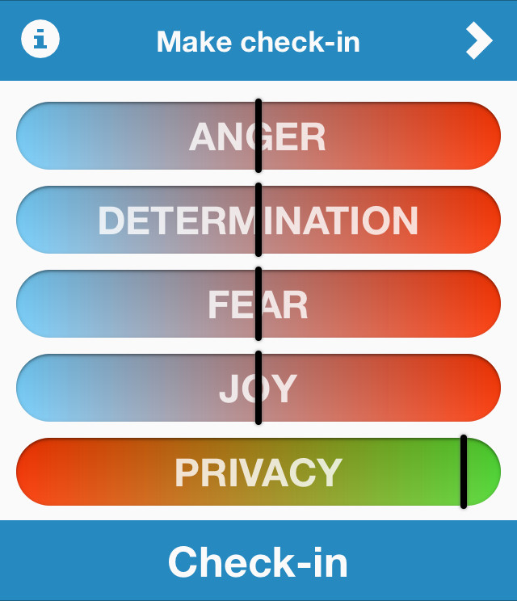
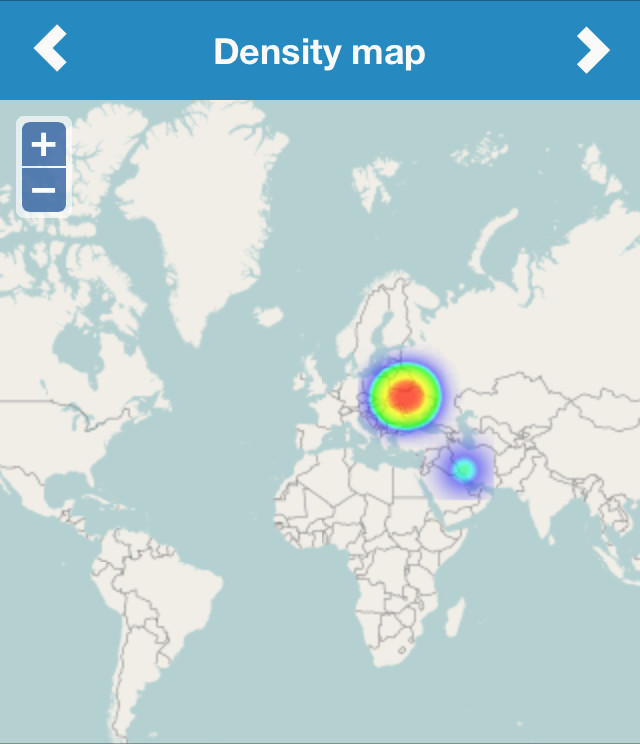

MaidanPower is a web app where people share feedback about the area they are in, and their feelings and emotions in current place and time. We have one layer to confirm the questionable size of a crowd, but also it lets the people contribute to the euromaidan movement even if they have to work or need to stay home. Another layer represents the feelings and emotions of the people, and also allows people to organize themselves, and to provide a targeted support.
On the main screen there's a list of range sliders where you can set your current emotional status, desired privacy level and perform check-in in order to share your location and emotions with a crowd.

Sharing your emotions helps to determine current status of average people mood in particular area. It means that everyone can find out potentially dangerous area or the one in need of your help and support. Thus this data helps people to be organized and informed instantly.
This kind of information can be used in both good and bad intentions. We don't want to let anybody to be able to use this data in such despicable way. Firstly think twice before sharing your location and then use privacy to make sure you are safe.
The level of privacy represents whether your location will be displayed on the map or not. It depends on a number of already checked-in people in your area. The lowest level possibly means that eneryone will know your current location, it will be available even if no one has checked-in around you. Do not check-in with 0 privacy unless you sure that you are completely safe!
We have two maps to visualize the data: Density and Emotion map. The first one is a heat map that represents a size of the crowd across different areas. The second map includes number of layers where each layer belongs to one of the available emotions. You can switch between layers to see a map of interested emotional status around the world.
